O que é uma API
Sistema desenvolvido em qualquer linguagem web, para que aplicações de terceiros consigam ter acesso.
Desenvolvimento de uma estrutura onde seja possivel realizar integrações com banco de dados.
Então o APi fica entre seu programa e o banco de dados, quando quiser executar algo vai para a API.
Esse são os protocolos:
POST => " Enviar dados ".
GET => " Obter dados ".
PUT => " Alterar dados ".
DELETE => "Remover dados ".
Essas são as linguagens e frameworks que são mais usadas:
Na parte de cima estão as linguagens, para fornt-end.,
na parte de baixo, são usadas para o back-end e/ frameworks.
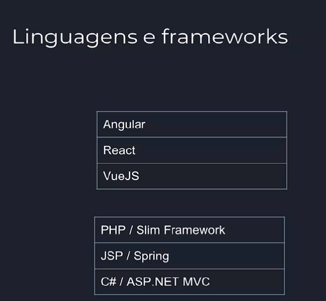
Iremos ultilizar o Angular para fazermos o front-end,
e o php para o back-end.
É bom ter um pouco de conhecimento sobre essas duas linguagens para fazermos a API.
Quais software serão usados ?
Para fazermos nossa API usaremos:
Xampp => que é para trabalhar com banco de dados, usando o mysql, junto com PHP.
Node.js => é para trabalhar com o "angular".
Angular => fácil de instalar depois do Node.js .
VScode => que é o editor, pode ser usado outro mas aqui será usado o VScode.
Configurar o ambiente de trabalho !
Localize o "xampp" que foi instalado no seu computador, normalmente fica no disco "C" com o nome xampp.
Precisa ativar o Xampp-Control, clica nele e ativa os dois primeiros "Apache" e o "MySQL".
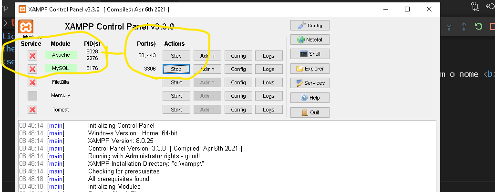
Dentro da pasta "xampp", encontre a pasta htdocs, e dentro dessa pasta crie outra pasta com o nome api.
Que onde vamos criar nosso api.
Agora abra o VScode, vai em arquivo e escolha "Abrir pasta" e escolha a pasta que acabamos de criar => "API".
Abra o terminal do VScode, e coloque esse comando ng new projeto-api, vai criar esse novo projeto.
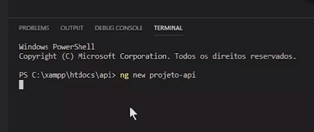
Vai te pedir para escolher se deseja adicionar rotas "Angular routing", escolha sim => "y", clique em enter.
Vai pedir para escolher qual padrão de estilo você quer, escolha "CSS", clique em enter.
Agora sim ele vai começar a criar o projeto, pode demorar de acordo com sua internet.
Configurar o htacess !
Dentro da pasta desse projeto "blocoNotas", tem uma pasta com o nome "htaccess",
copie o arquivo que está dentro dela .htaccess.
Abra a pasta que criamos "htdocs", e dentro da pasta "api",
agora terá outra pasta lá dentro do nosso projeto projeto-api que acabamos de criar no VScode.
Crie outra pasta com o nome php, abra ela e cole/coloque o arquivo ".htaccess" dentro dela.
Esse arquivo vai liberar em nosso servidor para as requisições:
POST, GET, OPTIONS, DELETE, PUT .
E vai poder usar o PHP puro sem frameWork.
Configurar o banco de dados !
Com o xampp instalado e executando.
Na barra de navegação digite: localhost clique em enter.
Abrirá a página de boas vindas do "Xampp", no canto superior clique em PhpMyAdmin.
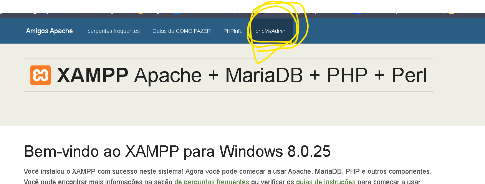
Vai abrir a interface gráfica dele, para manipular base de dados e tabelas.
Assim que abrir, clique em Base de Dados.
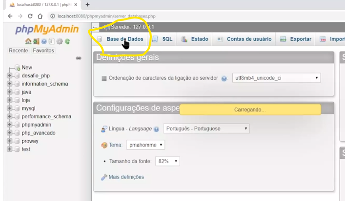
Crie uma nova "Base de Dados", com o nome => api.
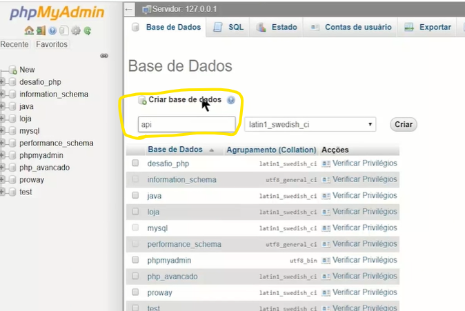
Dentro dessa base de dados, vai no botão SQL e vamos criar a tabela,
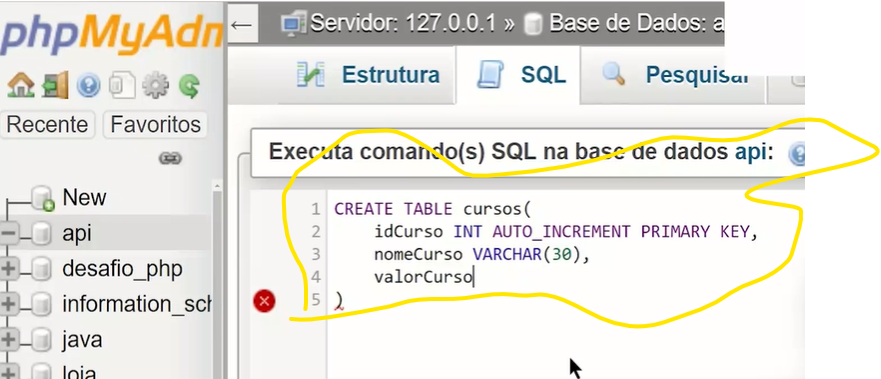
Para fazer o teste vê se está tudo certo, vamos adicionar um curso, clique em "SQL".
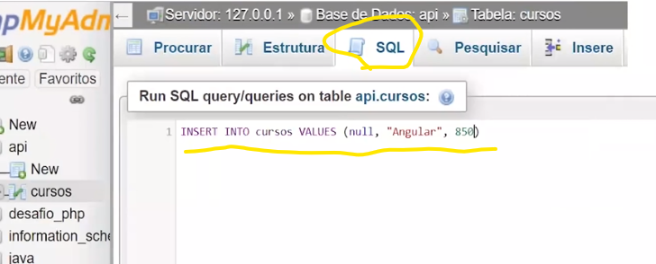
Depois clique na tabela curso, emcima ou do lado esquerdo, e veja como deveria ficar:
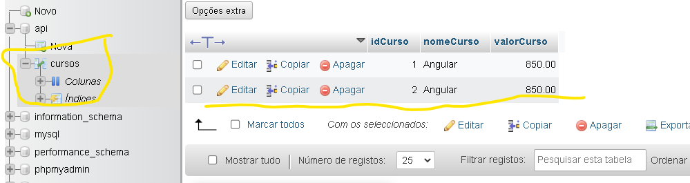
Prontinho nossa estrutura, nossa tabela de banco de dados api foi criada.
Agora só implementar com o PHP.
Conexão entre o PHP e o banco de dados MySQL
Abra o VScode, e dentro da pasta php crie um novo arquivo, com o nome de conexao.php,
No arquivo, abra e feche o "php", dentro dele adicione as variáveis:
// que vai receber o "localhost", endereço de acesso.
$url = " localhost " ;
// recebe o "root" nome de usuário padrão.
$usuario = " root " ;
// recebe a senha "vazia" que é o padrão também.
$senha = " " ;
// a base que criamos antes
$base = " api " ;
// PARA REALIZAR A CONEXÃO
$conexao = mysqli_connect ( * )
* Dentro do parenteses, tem que passar uns parâmetros, ficando assim:
$conexao = mysqli_connect ( $url, $usuario, $senha, $base ) ;
Veja como é o código:
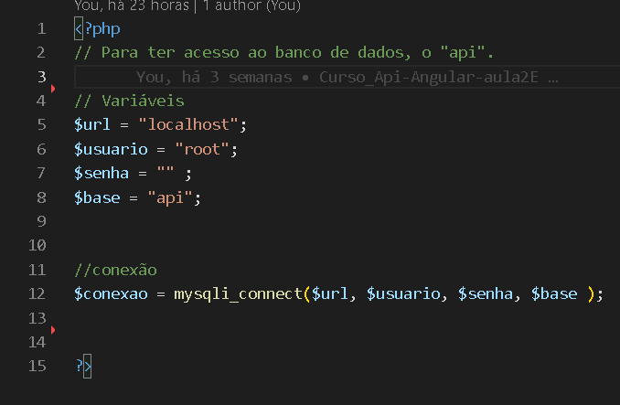
Com esse arquivo teremos acesso ao nosso banco de dados,
ou melhor dizendo a nossa base api, que está no banco de dados.
Listar os cursos no banco de dados
Abra o VScode, e dentro da pasta php crie um novo arquivo, com o nome de listar.php,
iremos fazer a exibição de um JSON para alimentar nosso banco de dados,
ultilizando o "Angular".
No arquivo, abra e feche o "php", dentro dele primeiro:
Vamos incluir a conexão, que criamos na aula anterior.
// incluir a conexão
incluide ( " conexao.php " ) ;
// prepara o comando SQL
$sql = " SELECT * FROM cursos " ;
// para executar esse comando
$executar = mysqli_query( * );
* Dentro do parenteses, tem que passar uns parâmetros, ficando assim:
$executar = mysqli_query ( $conexao, $sql ) ;
Agora temos que fazer um laço de repetição,
para pode adicionar num "JSON" :
// vetor para amarzenar os cursos e seus dados
$cursos = []
// indice para saber qual posição será adicionado o conteúdo
$indice = 0
// laço
// vai passar linha por linha
while ( $linha == mysqli_fetch_assoc( $executar ) ) *abre chaves
____$cursos[$indice]['idCurso'] = $linha['idCurso'];
____$cursos[$indice]['nomeCurso'] = $linha['nomeCurso'];
____$cursos[$indice]['valorCurso'] = $linha['valorCurso'];
$indice++;
* fecha a chaves
Agora tem que encapsula num "JSON"
//JSON
json_encode = (['cursos' => $cursos ]);
Veja como é o código, separei em duas imagens:
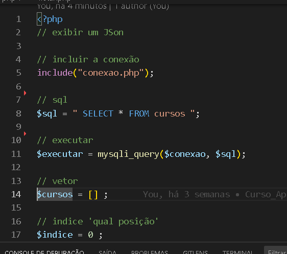
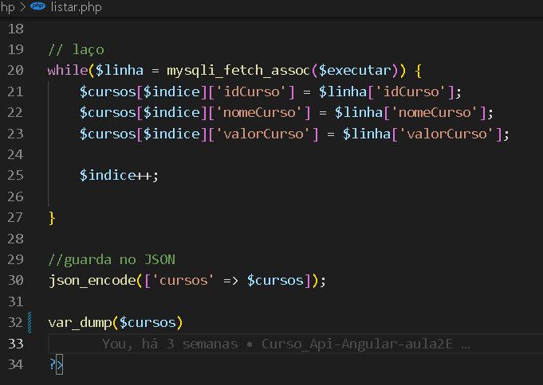
Para fazer o teste, vê se está funcionando, coloque essa variável:
// variável para teste
var_dump( $cursos );
Abra navegador, digite o localhost/api ou localhost:8080/api,
clique em "php", depois em "listar" e veja se aparece uma lista para você.
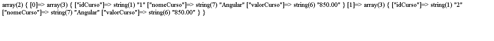
Se apareceu a lista, deu tudo certo e pode apagar o var_dump( $cursos );
Se não aparece verifique seu código, algo está errado!
Back-End para cadastrar os cursos
Abra o VScode, e dentro da pasta php crie um novo arquivo, com o nome de cadastrar.php,
No arquivo, abra e feche o "php", dentro dele primeiro:
Vamos incluir a conexão, para se conectar ao banco de dados "api".
// incluir a conexão
incluide ( " conexao.php " ) ;
* aqui irá receber as informações como "JSON",
ai te que colocar como serão recebidas essas informções.
// Obter dados, através de um "input" e será manipulado em php
$obterDados = file_get_contents( " php://input ") ;
// extrair os dados do JSON
$extrair = json_decode( $obterDados ) ;
Para transformar dados em JSON usamos o "json_encode".
Para transformar JSON em dados usamos o "json_decode"
Agora temos que separar os dados do JSON
// separar dados do JSON
$nomeCurso = $extrair-> cursos-> nomeCurso ;
$valorCurso = $extrair-> cursos-> valorCurso ;
// Explicando o significado desse comando:
$extrair é o que vai pegar os dados do JSON.
cursos é o nome do JSON que criamos a lista.
nomeCurso é uma caracteristica.
Veja como é o código, primeira imagem :
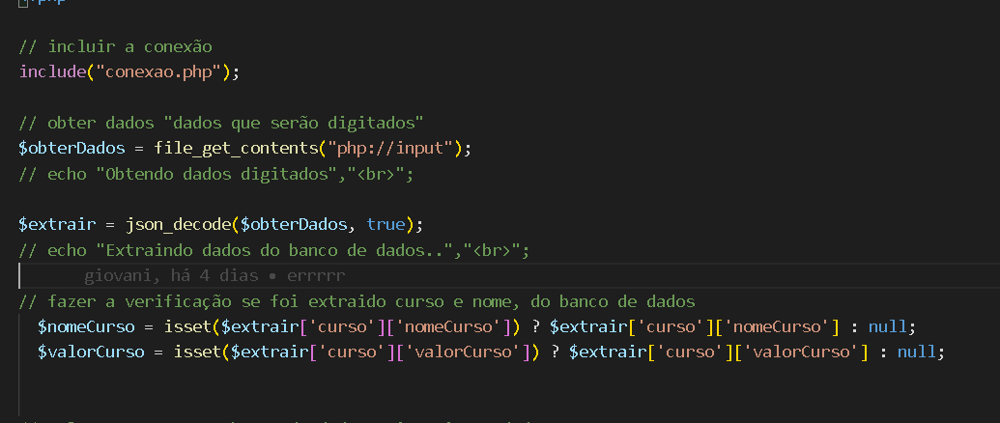
Para cadastrar os dados no banco de dados
$sql = "INSERT INTO cursos (nomeCurso, valorCurso) VALUES ('nomeCurso', $valorCurso)";
// para executar o cadastramento
mysqli_query($conexao, $sql);
// Exporta os dados cadastrados, para fazer alguma verificação...
__ $cursos = [
___________'nomeCurso' => $nomeCurso,
___________'valorCurso' => $valorCurso
__ ]
// Retorna o nome do curso e seu valor
json_encode( [ 'cursos' ] => $curso ) ;
Veja como é o código, segunda imagem:
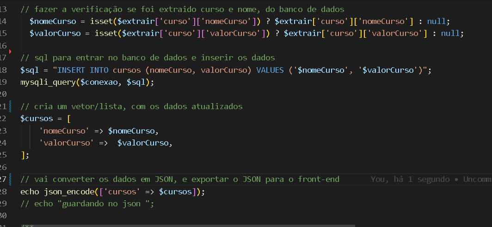
UPDATE para fazer alterações
Abra o VScode, e dentro da pasta php crie um novo arquivo, com o nome de alterar.php,
E quase igual o cadastrar, só terá algumas modificações,
precisa pegar o id do "objeto" que você deseja alterar.
No arquivo, abra e feche o "php", dentro dele primeiro:
Vamos incluir a conexão, para se conectar ao banco de dados "api".
// incluir a conexão
incluide ( " conexao.php " ) ;
* aqui irá receber as informações como "JSON",
ai te que colocar como serão recebidas essas informções.
// Obter dados, através de um "input" e será manipulado em php
$obterDados = file_get_contents( " php://input ") ;
// extrair os dados do JSON
$extrair = json_decode( $obterDados ) ;
Para transformar dados em JSON usamos o "json_encode".
Para transformar JSON em dados usamos o "json_decode"
Agora temos que separar os dados do JSON
// separar dados do JSON
$idCurso = $extrair-> cursos-> idCurso ;
$nomeCurso = $extrair-> cursos-> nomeCurso ;
$valorCurso = $extrair-> cursos-> valorCurso ;
// Explicando o significado desse comando:
$extrair => é o que vai pegar os dados do JSON.
cursos => é o nome do JSON que criamos a lista.
Veja como é o código, primeira imagem :
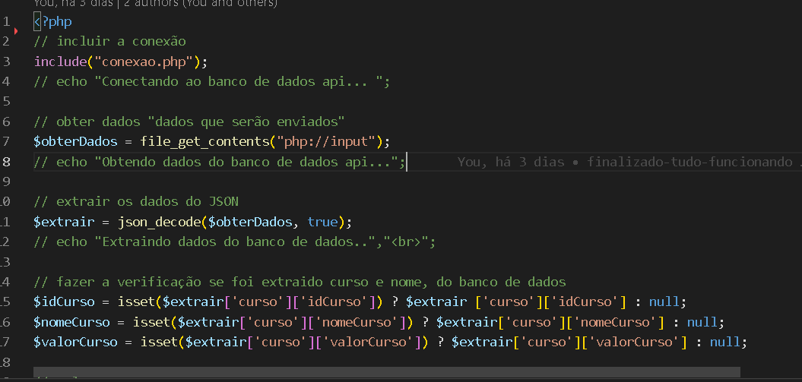
Para cadastrar os dados no banco de dados
// Sql, para fazer o UPDATE
$sql = " UPDATE cursos SET nomeCursos = '$nomeCurso', valorCurso = $valorCurso Where idCurso = $idCurso";
// para executar o cadastramento
mysqli_query($conexao, $sql);
// Exporta os dados cadastrados, para fazer alguma verificação...
___$cursos = [
___________'idCurso' => $idCurso,
___________'nomeCurso' => $nomeCurso,
___________'valorCurso' => $valorCurso
__ ]
// Retorna o nome do curso e seu valor
json_encode( [ 'cursos' ] => $curso ) ;
Veja como é o código, segunda imagem:
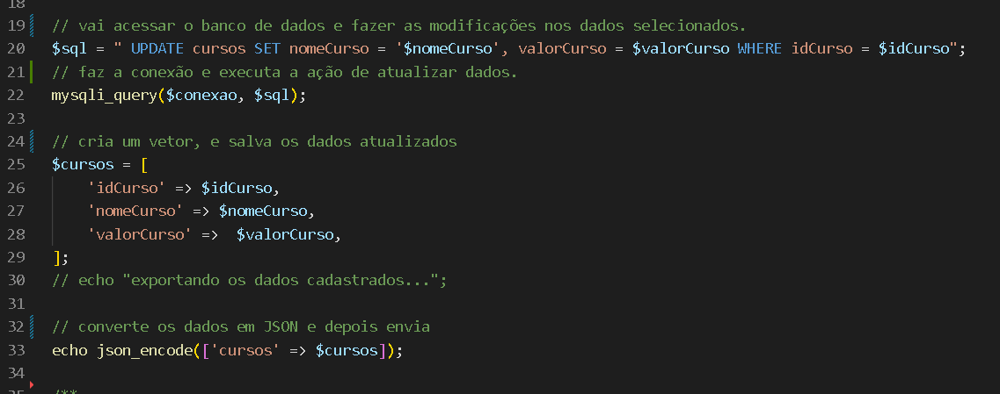
EXCLUIR dados
Abra o VScode, e dentro da pasta php crie um novo arquivo, com o nome de excluir.php,
E quase igual o cadastrar e o alterar, só terá algumas modificações,
precisa pegar o id do "objeto" que você deseja excluir.
No arquivo, abra e feche o "php", dentro dele primeiro:
Vamos incluir a conexão, para se conectar ao banco de dados "api".
// incluir a conexão
incluide ( " conexao.php " ) ;
* aqui irá receber as informações como "JSON",
ai te que colocar como serão recebidas essas informções.
// Obter dados, através de um "input" e será manipulado em php
$obterDados = file_get_contents( " php://input ") ;
// extrair os dados do JSON
$extrair = json_decode( $obterDados ) ;
Para transformar dados em JSON usamos o "json_encode".
Para transformar JSON em dados usamos o "json_decode"
Agora temos que separar os dados do JSON
// separar dados do JSON
$idCurso = $extrair-> cursos-> idCurso ;
// Explicando o significado desse comando:
$extrair => é o que vai pegar os dados do JSON.
cursos => é o nome do JSON que criamos a lista.
idCurso=> é a indentificação do curso.
Para cadastrar os dados no banco de dados
// Sql, para excluir
$sql = "DELETE FROM cursos WHERE idCurso = $idCurso
// para executar o cadastramento
mysqli_query($conexao, $sql);
Veja como é o código:
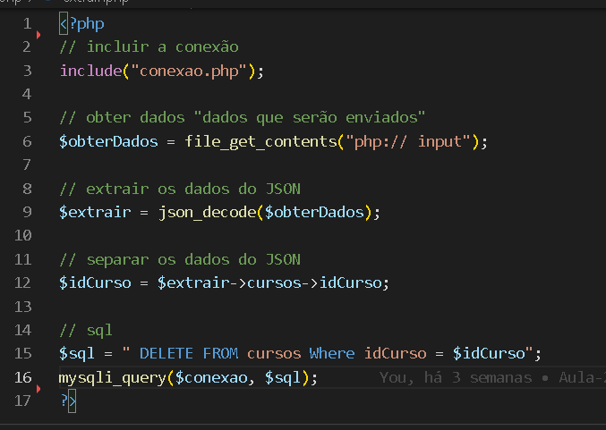
Já temos um arquivo para excluir dados do banco de dados.
Configurando os caracteres especiais acentos
Para não dá erro quando entrar no banco de dados,
por causa dos acentos.
No arquivo conexao, adicione o código:
// Configurar caracteres especiais, os acentos.
mysqli_set_charset($conexao, "utf8");
Quem sou eu

Giovani Teodoro Martins
Passa-Quatro,Minas Gerais
Eu me chamo Giovani, moro na cidade de Passa-Quatro,Minas Gerais.
Atualmente trabalho como barbeiro, possuo uma barbeiria, onde já trabalho há uns 9 anos.
Tenho 39 anos, sou solteiro, tenho um filho de 12 anos.